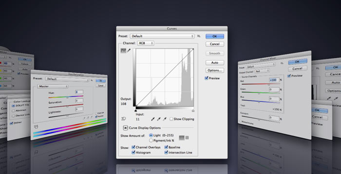

Floating Adjustments
Adjustment Layers as Floating Dialogs
Big Dialogs
Adjustment Layers rely on the Properties Panel - don't you better like bigger, modal dialogs too?
They where the norm back in Photoshop CS3.
Create, Modify
You're able to either Create new, and Modify existing, Adjustment Layers as large floating windows - all kind: Curves, Hue/Saturation, Brightness/Contrast, etc.
Documentation
Create New
Open the Floating Adjustment panel (it's handy to clip it below the Photoshop's own Adjustment panel). Each time you create a new Adjustment Layer, it will pop up as a big, floating dialog. Close the panel to restore the original behavior.
Modify Existing
Select an Adjustment Layer in the Layers palette, then click the Floating Adjustments panel's "Modify" button. The big modal dialog will pop up for you to edit it. Click OK in the dialog itself when you're done editing.
By Davide Barranca